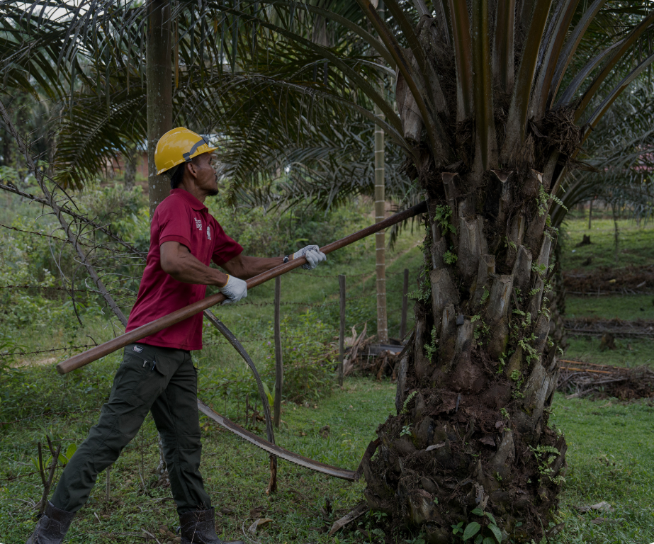

Regenerative agriculture goes beyond sustaining productivity by restoring soil health, strengthening ecosystems, and improving the resilience of farming systems. Through Farmer Field School, farmers are supported to adopt practices that benefit both their farms and the environment.

12,200+
FARMERS TRAINED
1,776 in Indragiri Hulu
1,125 in Rokan Hulu and Rokan Hilir
Equipping farmers across Riau with the knowledge and skills to adopt regenerative and sustainable practices.
"Being a palm oil farmer is not only about chasing yields. It is also about taking care of the land for the generations to come." — Nurhadi, Kilang Jaya Farmer Group